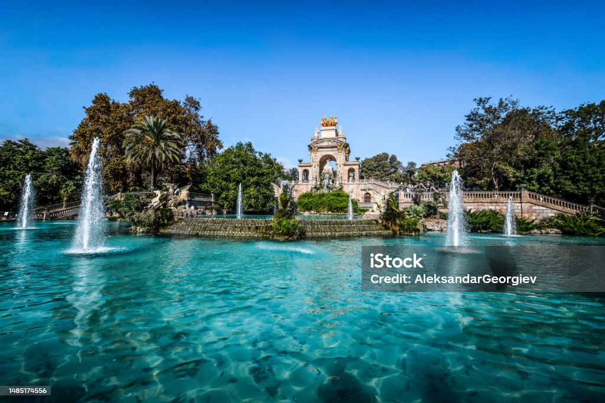

Barcelona, Alma do Mar Sob o céu azul que abraça o mar, Barcelona se ergue, a brilhar, Gaudí desenha sonhos no ar, E a cidade dança, sem nunca parar. Las Ramblas, vibrantes e cheias de cor, Sente-se o pulsar de cada sabor, Entre ruas antigas, de pedra e flor, O espírito vive em cada calor. Montjuïc observa, sereno e atento, Sagrada Família, um eterno lamento, Cada curva e detalhe são puro alento, Uma cidade de arte, de sol e de vento. No murmúrio do mar, na brisa que vem, Barcelona é vida, é o agora, é o além, E quem a visita, para sempre retém, O desejo de voltar, mais uma vez também.

Foto de aleksandar-georgiev

Lisboa

Milão

Londres

Praga

Roma

Varsóvia

Reykjavik

Budapeste

Bruxelas

Viena

Madrid
Texto 1
Texto 2
Texto 3
Surpresa!
Explore as Capitais da Europa